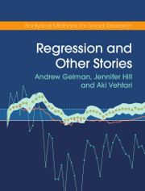

class: center, middle, inverse, title-slide # Getting the Most Out of Surveys ## Multilevel Regression and Poststratification (MRP) ### Joseph T. Ornstein ### University of Georgia ### 5 July, 2022 --- # A Research Question <img src="https://upload.wikimedia.org/wikipedia/commons/thumb/f/f1/Defund_the_police.jpg/330px-Defund_the_police.jpg" width="650" style="display: block; margin: auto;" /> -- If you wanted to know how popular this movement was in various US cities, how would you go about figuring it out? ??? Police reform is a contentious political topic in the United States, following a number of high-profile police killings of citizens. One could imagine a research question that was interested in the determinants of, or effects of, changes in public opinion regarding police reform. And because police departments in the United States are administered by local governments rather than the state or national level government, knowing how support varies across small political units would be particularly useful. Famously, protestors are not a representative sample of the population. Estimating support for this policy is therefore quite tricky. Image credit: By Taymaz Valley - https://www.flickr.com/photos/taymazvalley/49974424258, CC BY 2.0, https://commons.wikimedia.org/w/index.php?curid=91013003 --- # The Problem -- - The United States is big. - There are 19,495 cities, towns, and villages, spread across 50 states. -- - Conducting many local-level surveys is prohibitively costly. -- - Large nationally-representative surveys are unlikely to give us representative samples in small areas. -- <br> - Without good measures, we can't even begin to ask causal questions! --- class: inverse, center, middle # Multilevel Regression and Poststratification --- # Multilevel Regression and Poststratification -- Our approach today: -- - Take a large, nationally representative survey. -- - Determine what variables predict support for police reform. -- - Use those variables to estimate support in small areas. -- By the end of the lecture, you'll be able to: -- - Describe the two steps in MRP -- - Generate MRP estimates using sample code in `R` -- - Time permitting, we'll explore two recent variants of MRP: - Stacked regression and postratification (SRP) - Synthetic poststratification (MrsP) --- # If you'd like to follow along... All code and data (including these slides) are available on [GitHub](https://github.com/joeornstein/mrp-chapter). <img src="img/qrcode_github.png" width="500" style="display: block; margin: auto;" /> ??? Pause here. This includes materials from the book chapter as well, though some of the things I'm going to show you today are different than what I focus on in the chapter. In particular, I'll give you a bit more detail on multilevel models. (Now go to the page and show them how you can clone or download the repository.) --- class: center, inverse, middle # Let's Take A Look At Some Data --- # The Cooperative Election Study (CES) ```r # load some R libraries we'll need library(tidyverse) library(modelsummary) # load CES (2020) national-level survey load( 'data/CES-2020-All.RData' ) names(ces) ``` ``` [1] "caseid" "gender" "educ" [4] "race" "age" "age_cat" [7] "abb" "division" "pew_religimp" [10] "homeowner" "urban" "parent" [13] "military_household" "defund_police" "homicide_rate" [16] "biden_vote_share" ``` ```r dim(ces) ``` ``` [1] 60283 16 ``` ??? There are roughly 60,000 people in the survey. We know X, Y, and Z individual-level characteristics, plus the state where they live. --- # Our Target Because the CES sample is so large, we can get reasonably precise estimates at the state level. ```r target <- ces |> group_by(abb) |> summarize(pct_support = mean(defund_police), num_respondents = n()) head(target) ``` ``` # A tibble: 6 x 3 abb pct_support num_respondents <chr> <dbl> <int> 1 AL 0.374 943 2 AR 0.403 534 3 AZ 0.393 1454 4 CA 0.480 5010 5 CO 0.467 1059 6 CT 0.405 639 ``` --- # Our Target <img src="mrp-slides_files/figure-html/unnamed-chunk-5-1.png" width="1000" style="display: block; margin: auto;" /> --- ## Draw a Sample To test the capabilities of MRP, we're going to draw a smaller sample and use it to estimate the state-level means from the representative survey. ```r ces_sample <- ces |> slice_sample(n=3000) sample_summary <- ces_sample |> group_by(abb) |> summarize(estimate = mean(defund_police), num_respondents = n()) head(sample_summary) ``` ``` # A tibble: 6 x 3 abb estimate num_respondents <chr> <dbl> <int> 1 AL 0.5 46 2 AR 0.276 29 3 AZ 0.324 71 4 CA 0.504 278 5 CO 0.556 63 6 CT 0.5 36 ``` ??? Notice that our sample estimates are pretty wildly off the mark. --- ## Sample Estimates <img src="mrp-slides_files/figure-html/unnamed-chunk-7-1.png" width="800" style="display: block; margin: auto;" /> ??? Note that California, with 516 respondents, is very precisely estimated. --- class: center, middle, inverse # Use All The Information You Have! ??? We have more information than this. We know things about the people who live in Delaware, even though we only have 21 respondents from Delaware. --- ## Use All The Information You Have! -- We only have 6 respondents from North Dakota. So, is that all the information we have about North Dakotans? -- - **No!** -- - We also have 9 respondents from *South* Dakota. -- - And we have hundreds of similar respondents (predominantly white, rural, religious) from across the country. -- Based on how other, similar respondents answered the police reform question, we can come up with a better estimate about how North Dakotans feel. In a sense, we are "borrowing" information from elsewhere in the survey. ??? If you don't know much about the geography of US states, not to worry. You see, South Dakota is directly to the south of North Dakota. And they are very similar states. The only reason they are different states at all is because Republicans were happy to admit two states instead of 1 so they could increase their number of seats in the US Senate. --- class: inverse, center, middle # How It Works --- # Multilevel Regression and Poststratification (In Two Easy Steps) <br> -- ## Step 1: Multilevel Regression Estimate a (regularized) model to predict the outcome. -- <br> ## Step 2: Poststratification Reweight the predictions from the model to your population of interest. --- class: inverse, center, middle # Example --- # Example Suppose you had to guess the average height of this group of children: - Marco (male, 72 months old) - Roberto (male, 54 months old) - Anna (female, 60 months old) - Maria (female, 80 months old) - Luca (male, 36 months old) -- <br> ### How would you approach this problem? --- # Step 1: Fit a Model <img src="mrp-slides_files/figure-html/unnamed-chunk-8-1.png" width="1400" style="display: block; margin: auto;" /> --- # Step 1: Fit a Model `$$\text{Height}_i = \beta_0 + \text{Age}_i\beta_{1} + \text{Gender}_i\beta_{2} + \varepsilon_i$$` -- <img src="mrp-slides_files/figure-html/unnamed-chunk-9-1.png" width="1000" style="display: block; margin: auto;" /> --- # Step 1: Fit A Model `$$\text{Height}_i = \beta_0 + \text{Age}_i\beta_{1} + \text{Gender}_i\beta_{2} + \varepsilon_i$$` ```r lm1 <- lm(height ~ age + gender, data = d) lm1$coefficients ``` ``` (Intercept) age genderM 63.7516508 0.6118978 -0.6610833 ``` --- # Step 2: Poststratify -- Now, take the fitted model and weight its predictions based on the composition of the group. -- <br> `$$\text{Height}_i = 63.75 + \text{Age}_i\times 0.612 - \text{Gender}_i\times 0.661 + \varepsilon_i$$` -- <br> - Marco (male, 72 months old): 63.75 + 0.612 `\(\times\)` 72 - 0.661 = **107.1** - Roberto (male, 54 months old): 63.75 + 0.612 `\(\times\)` 54 - 0.661 = **96.1** - Anna (female, 60 months old): 63.75 + 0.612 `\(\times\)` 60 = **100.5** - Maria (female, 80 months old): 63.75 + 0.612 `\(\times\)` 80 = **112.7** - Luca (male, 36 months old): 63.75 + 0.612 `\(\times\)` 36 - 0.661 = **85.1** -- <br> Predicted average height: **100.3** --- class: center, middle # That was MRP! ??? Everything else is refinements: making the first-stage model more complex or different ways of generating the poststratification frame. --- class: inverse, center, middle # Back To Our Policy Example --- # Step 1: Fit a Model -- Which variables should we use to predict support for police reform? ```r names(ces_sample) ``` ``` [1] "caseid" "gender" "educ" [4] "race" "age" "age_cat" [7] "abb" "division" "pew_religimp" [10] "homeowner" "urban" "parent" [13] "military_household" "defund_police" "homicide_rate" [16] "biden_vote_share" ``` --- # Step 1: Fit a Model ```r model1 <- glm(defund_police ~ age_cat + pew_religimp, family = 'binomial', data = ces_sample) modelplot(model1) ``` <img src="mrp-slides_files/figure-html/unnamed-chunk-12-1.png" width="600" style="display: block; margin: auto;" /> --- # Step 2: Postratify First, create a *poststratification frame*, which counts every possible combination of characteristics in the population of interest. ```r psframe <- ces |> count(abb, age_cat, pew_religimp) head(psframe) ``` ``` # A tibble: 6 x 4 abb age_cat pew_religimp n <chr> <chr> <chr> <int> 1 AL 18-29 Not_at_all_important 35 2 AL 18-29 Not_too_important 30 3 AL 18-29 Somewhat_important 70 4 AL 18-29 Very_important 70 5 AL 30-39 Not_at_all_important 36 6 AL 30-39 Not_too_important 19 ``` -- **NOTE**: For most applications, you will want to compute the poststratification frame from census data, not survey data. ??? Because you want to know the composition of the general population, not just the composition of your survey sample. --- # Step 2: Poststratify Next, we estimate the probability that each group in the poststratification frame will support the policy. ```r psframe$predicted_probability <- predict(model1, psframe, type = 'response') head(psframe) ``` ``` # A tibble: 6 x 5 abb age_cat pew_religimp n predicted_probability <chr> <chr> <chr> <int> <dbl> 1 AL 18-29 Not_at_all_important 35 0.762 2 AL 18-29 Not_too_important 30 0.615 3 AL 18-29 Somewhat_important 70 0.526 4 AL 18-29 Very_important 70 0.411 5 AL 30-39 Not_at_all_important 36 0.750 6 AL 30-39 Not_too_important 19 0.600 ``` --- # Step 2: Postratify Finally, weight the model's predictions by the number of people in each category. ```r mrp <- psframe |> group_by(abb) |> summarize(estimate = weighted.mean(predicted_probability, n)) head(mrp) ``` ``` # A tibble: 6 x 2 abb estimate <chr> <dbl> 1 AL 0.388 2 AR 0.389 3 AZ 0.411 4 CA 0.452 5 CO 0.441 6 CT 0.435 ``` --- # Compare MRP and Sample Means <img src="mrp-slides_files/figure-html/unnamed-chunk-16-1.png" width="800" style="display: block; margin: auto;" /> --- class: center, middle, inverse # Well, if that worked so well... --- # Why not make the model even better?? ```r model2 <- glm(defund_police ~ age_cat + pew_religimp + gender + race + abb, data = ces_sample) ``` --- class: center, middle, inverse # The Dangers of Overfitting and Underfitting --- ## Overfitting and Underfitting -- - A model with too few parameters will not accurately predict the outcome. - Such a model is *underfit*. -- - But a model with too many parameters is a problem as well. - It captures so much in-sample variation that it fails fails to borrow information from across groups. - Such a model is *overfit*. -- To make good predictions, you want a model that is between these two extremes! --- class: center, middle, inverse --- class: inverse, center, middle # Refinements --- # Refinements 1. More complex first stage models 2. Synthetic poststratification --- class: inverse, center, middle # What's Next? --- # What's Next? - This is an active area of research. -- - One promising application: heterogeneous treatment effects in experimental studies [(Gao, Kennedy, and Simpson, 2022)](http://arxiv.org/abs/2102.10003). -- - Often the Average Treatment Effect (ATE) is uninteresting. - Fit a model of Conditional Average Treatment Effects (CATEs) by group, then poststratify to the population of interest. -- - If you'd like more practice with MRP, read through these [MRP Case Studies](https://bookdown.org/jl5522/MRP-case-studies/). -- - If you'd like to use MRP in your own work, consider exploring some recent `R` packages, like [`autoMrP`](https://cran.r-project.org/web/packages/autoMrP/index.html). --- # What's Next? .pull-left[ <a href="https://xcelab.net/rm/statistical-rethinking/"> <img src="img/statistical-rethinking.png" width="245px"/> </a> ] .pull-right[ <a href="https://avehtari.github.io/ROS-Examples/">  </a> ] --- class: center, middle, inverse # Thanks! Joe Ornstein *University of Georgia* Email: [jornstein@uga.edu](mailto:jornstein@uga.edu) Website: [joeornstein.github.io](https://joeornstein.github.io/) Please feel free to reach out with additional questions.